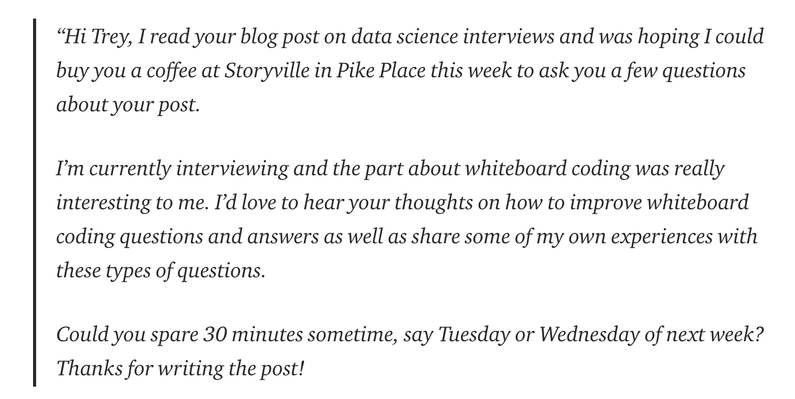

In the other part of this post, I covered how to start becoming involved in the data science community and meet people in general. But what if you read a really cool post by someone and want to follow up with them? This post offers some thoughts on how you can most effectively reach out to specific people.
Two important caveats to start, both inspired by other posts on similar topics. First, to quote Trey Causey: “I am not without sin, and I’m also still figuring all this out.” Second, for those of you who hate the very idea of networking and think your work should speak for yourself, I really like Rachel Thomas’ take on this. She’s writing about personal branding, but I think there’s a lot of overlap there (as I discuss later):
Personal branding is no substitute for doing high-quality technical work; it’s just the means by which you can share this work with a broader audience.
Offer value
True networking is about building a relationship, not a one-sided demand where you just want to get something immediately. And the best way to build mutually fulfilling relationships is to have something of value to offer in return.
While people sometimes think you need a network to accomplish great things, it actually mostly goes the other way. Adam Grant wrote about this in a recent article:
My students often believe that if they simply meet more important people, their work will improve. But it’s remarkably hard to engage with those people unless you’ve already put something valuable out into the world. That’s what piques the curiosity of advisers and sponsors. Achievements show you have something to give, not just something to take.
Sure, you can fire off cold emails to people you respect — they’re just a click away — but you’ll be lucky if 2 percent even reply. The best way to attract a mentor is to create something worthy of the mentor’s attention. Do something interesting, and instead of having to push your way in, you’ll get pulled in. The network comes to you.
In sum, don’t worry about who you know, but be worth knowing. But how do you become “worth knowing?”
One way is to build your personal brand. Rachel Thomas’ aforementioned post is a great way to start this process, as she covers what a personal brand even is, how to get over the “ick” factor, and how to use Twitter, public speaking, and blogging to build one. For more advice, check out Dave Robinson’s post and Rachel Thomas’ other post on why you should make a blog and where to start. While having projects on github is good, data scientists also need communication skills. Plus, it’s just more likely people will read a post summarizing the main takeaways and methods of a project rather than trying to parse thousands of lines of barely commented code.
Find a connection
To make it more likely you’ll get a response, try to find if you have something in common with the other person. Maybe you both went to same school or same bootcamp. Do you have a similar educational background or previous career, especially one that is not traditional? It doesn’t have to be career-related; maybe you both have the same a non-tech hobby or spent time living abroad in the same country. If it’s a company rather than a person you’re interested in, check with your school or bootcamp’s career center to see if they know someone there.
A mutual acquaintance can also serve as a connection. If you have a good conversion with someone, you can ask them (not demand) if they know anyone else in the same field you could talk to.1 For example, recently Julia Silge, a data scientist I know at StackOverflow, asked if she could connect me to Lukas Vermeer, a data scientist at booking.com. He was interested in talking to people about their company’s experimentation set-up, and we had a great conversation. I then introduced him to Sarah Manning, the manager of our analytics engineering team, as she had talked to some of his colleagues at a conference. When doing introductions like this, always do a double opt-in introduction, where you ask both people if they’re interested in being introduced to the other:
It's also why double opt-in intros are a must. Please please please don't go intro'ing people to each other without asking first.
— Lara Hogan (@lara_hogan) August 5, 2017
Understand their position
Reaching out to Wes McKinney (Python pandas creator) or Andrew Ng for personal advice is very different than reaching out to me. They’re busier, more well known, get a lot of people reaching out, and may not have time to respond. They’re at the point where if they do give advice, it’s more helpful for them to make a public post or reply on twitter so their thoughts can be shared broadly, especially for more general questions, like “how do I get into data science?”
Jesse Maegan, who started the R for Data Science Online Learning Community, recently discussed this. She would get twitter DMs (direct, private messages) asking for advice on figuring out how to continue learning data science. She loved getting these messages and would give tailored, individual responses to each, but the volume eventually grew so much she couldn’t keep up. So instead she wrote this great post with good resources for beginners and some thoughts on learning how to learn so she could scale up her impact.
Get specific
Trey Causey wrote a great post called “Do you have time for a quick chat?” on sending a cold email. He does a really nice job breaking down how to write a great request email and set up a meeting for success:

A key point: have an agenda of what you want to discuss and share it with them. If you just ask to “pick their brain,” it comes off as you wanting the person to drop everything just so you can assail them with any question you can think of, potentially for hours. Check out his whole post for what makes the above example email effective.
Follow up
If you have a good conversation with someone and they help you with something, follow up! For example, if you were looking for a job, let them know when you found one and thank them.
If you were introduced to someone or have a connection with them and haven’t heard back, give them a week or two and follow up. Sometimes emails just fall through the cracks and they’ll appreciate being reminded. If it’s a cold email, use your judgment about whether to follow up.
Finally, don’t take non-responses personally. People are busy, and you don’t know what is happening in their personal life.
Conclusion
Remember that others want to help; just look at how many have signed up to help answer questions and mentor data science newcomers at data helpers (this is a great resource for finding someone to reach out to). And the person who’s most helpful to you is probably not the most famous data scientist. You’ll likely learn more by talking with peers facing the same issues, teaching beginners to force a deeper understanding of core topics, or asking someone who recently accomplished your goal (e.g. giving your first talk).
The main way I try to help others in the community is through these posts, and I’ll be back to tackling the challenges of A/B Testing soon.
If you found this post useful, you might be interested in the book on data science careers I’m writing with Jacqueline Nolis, “Build Your Career in Data Science,” to be published by Manning in March 2020. The entire book is available online if you pre-order, and you can get 40% off with the code buildbook40%.
Footnotes
Never talk to someone just to get an introduction to someone else; this goes back to the “not using people” principle.↩︎